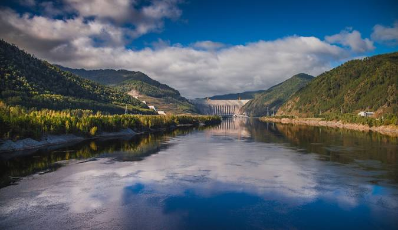
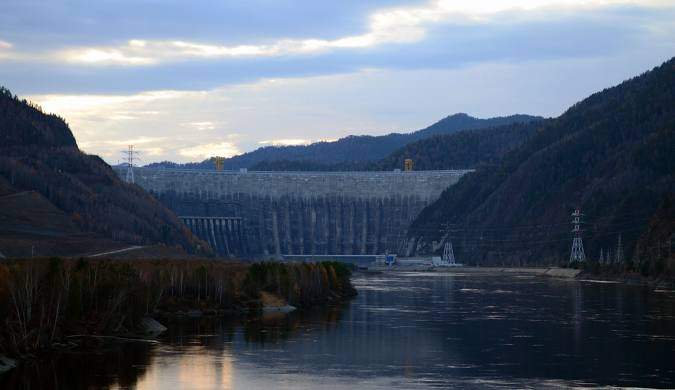
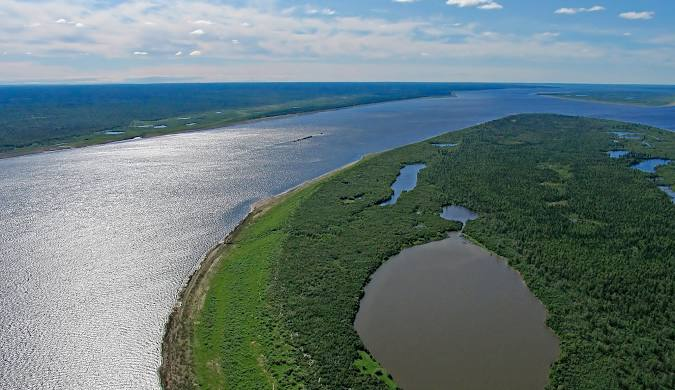

The Yenisei River, one of the longest rivers in the world, flows through the heart of Siberia in Russia, meandering from the Mongolian steppes to the Arctic Ocean. Stretching approximately 3,487 kilometers (2,728 miles), it ranks among the largest river systems globally, alongside the Amazon and the Nile. The river not only serves as a vital natural resource but also plays a crucial role in the cultural and economic life of the regions it traverses.
Geographic and Hydrological Features
The Yenisei originates in the Baikal Mountains of Mongolia, where its headwaters are formed by the confluence of the Angara and Yenisei rivers. As it progresses northward, it flows through a diverse array of landscapes, including mountainous regions, vast taigas, and expansive tundras. The river’s course includes notable tributaries, such as the Selenga and the Tunguska rivers, which contribute significantly to its flow.
The Yenisei is characterized by its distinct hydrological patterns. It experiences a pronounced seasonal variation, with significant ice formation during winter and substantial water flow during the spring melt. This dynamic hydrology supports a rich ecosystem, hosting a variety of fish species, including salmon, grayling, and pike, which are vital for both the local economy and biodiversity.
Historical Significance

The Yenisei River has been a crucial lifeline for Siberian inhabitants for millennia. Indigenous peoples, such as the Evenki and Selkup, have relied on its resources for sustenance and cultural practices. Historically, the river served as a major transportation route, facilitating trade and communication between different communities. The development of settlements along its banks can be traced back to ancient times, with archaeological evidence revealing the presence of early civilizations that thrived on its resources.
In the 20th century, the Yenisei gained additional prominence due to the establishment of hydroelectric projects, most notably the Sayano-Shushenskaya Dam, which is one of the largest hydroelectric power stations in Russia. This project has significantly impacted the region's energy landscape, providing power to millions while also raising concerns about environmental sustainability.
Economic Importance

The Yenisei River is integral to the economy of Siberia. Its waters support industries such as fishing, forestry, and agriculture. The river's rich fish stocks are not only a source of food but also contribute to the local and national economies through commercial fishing. The forestry industry benefits from the surrounding taiga, where timber harvesting is prevalent. Additionally, the fertile floodplains of the Yenisei have historically supported agriculture, providing crops for local consumption.
Furthermore, the river's navigability in certain sections allows for transportation of goods and resources, making it a vital artery for trade. However, the environmental impacts of industrialization and climate change pose significant challenges to the sustainability of these economic activities.
Environmental Concerns
As a critical ecological corridor, the Yenisei River faces various environmental threats. Industrial pollution, deforestation, and climate change are major concerns that jeopardize its health and the well-being of the ecosystems it supports. The construction of dams has altered natural flow patterns, affecting fish migration and leading to habitat degradation.
In recent years, there has been a growing awareness of the need for sustainable management practices to preserve the river's ecological integrity. Conservation efforts are being initiated to mitigate the impacts of industrial activities and promote a balance between economic development and environmental stewardship.
Cultural Significance
Beyond its economic and ecological importance, the Yenisei River holds deep cultural significance for the people of Siberia. It is woven into the folklore, traditions, and spiritual beliefs of the indigenous communities that have lived along its banks for generations. The river symbolizes life, providing sustenance and serving as a backdrop for countless stories and legends.

Festivals and rituals often center around the river, celebrating its role in the community's identity and heritage. Art, music, and literature inspired by the Yenisei reflect the profound connection between the river and the people who depend on it.
Conclusion
The Yenisei River stands as a testament to the beauty and complexity of Siberia’s natural environment. It is a vital resource that supports diverse ecosystems, sustains local economies, and enriches the cultural heritage of the region. As we move forward, recognizing the importance of preserving this natural wonder is essential, not only for the communities that rely on it but for the global ecosystem as a whole. Sustainable practices and conservation efforts will be critical in ensuring that the Yenisei continues to thrive for generations to come.
 The Yenisei River: A Lifeline of Siberia
The Yenisei River: A Lifeline of Siberia